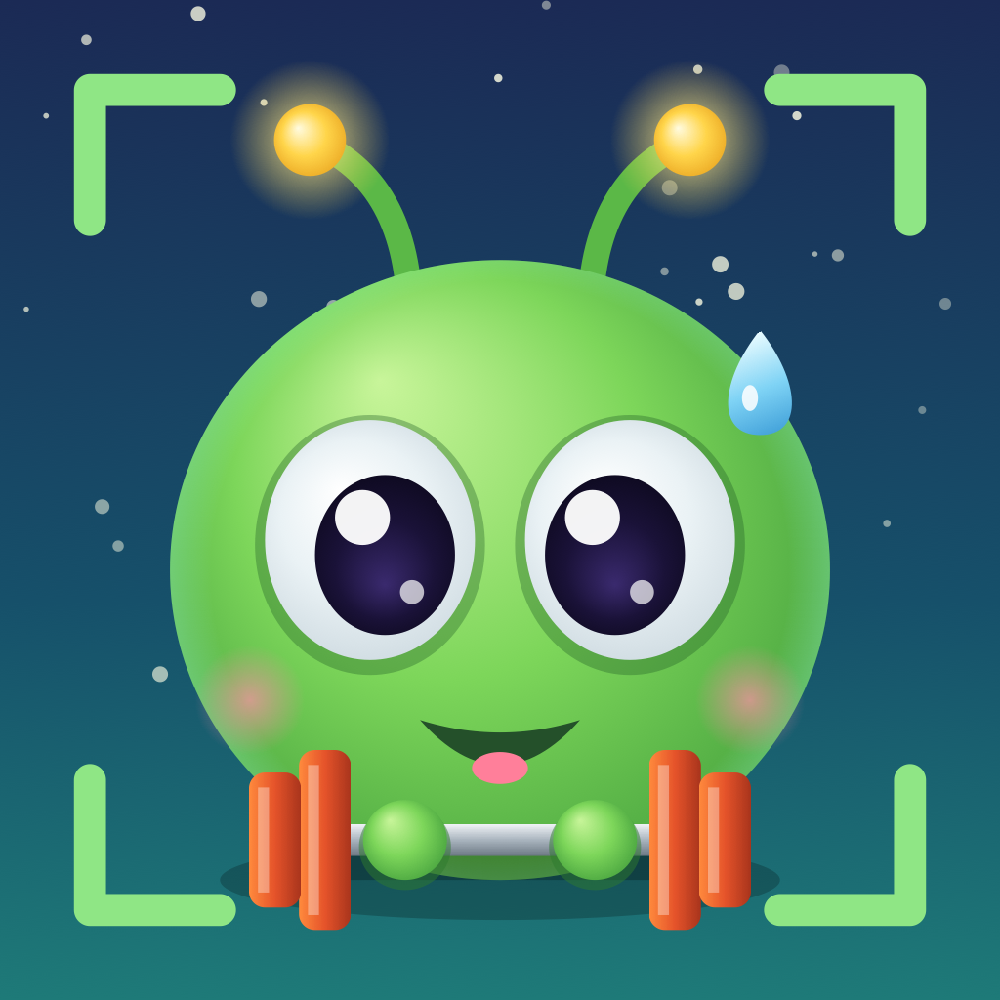

Augmented-Reality-Spiel für iPhone und iPad · English
Sie sind gelandet — in deinem Zimmer. Durch die Kamera tauchen Aliens auf: auf dem Boden, auf dem Tisch, an der Wand und in der Luft. Geh hin und greif zu!
Aliens landen nie auf Straßen: sieht die Kamera eine Straße oder Autos, verschwinden sie sofort. Sie sitzen nie höher, als Kinder reichen. Achte beim Gehen trotzdem auf Möbel, Treppen, Haustiere und andere Menschen. Nach jeder Runde gibt es eine Pause; Eltern können sie in den Einstellungen aufheben.
Keine Werbung, keine In-App-Käufe, kein Konto, keine Datenerhebung — alles bleibt auf dem Gerät.
Fragen, Fehler, Ideen, Alien-Wünsche: deepframe.support@gmail.com — oder in der App unter Einstellungen → Feedback senden.
Häufige Fragen
Es tauchen keine Aliens auf. Schwenke die Kamera langsam über Boden und Möbel, bis die Flächen erkannt sind. Ist eine Straße im Bild, kommen bewusst keine.
Die Übungen werden nicht gezählt. Handy in die vordere Hosentasche, vor dem Start kurz still stehen. Notfalls hebt die Eltern-Freigabe die Pause auf.
Welche Geräte? iPhone und iPad mit iOS 18 und Kamera.
Aliens have landed — in your room. Through the camera they appear on the floor, on tables, on walls and in mid-air. Walk up and grab them with your hand: the camera spots your hand and you score full points. Ten aliens, a lab to build your own, play together with up to three kids, and active breaks with squats, jumping jacks, push-ups or burpees. Aliens never land on roads. No ads, no in-app purchases, no account, no data collection. Support: deepframe.support@gmail.com · Privacy policy
© AK